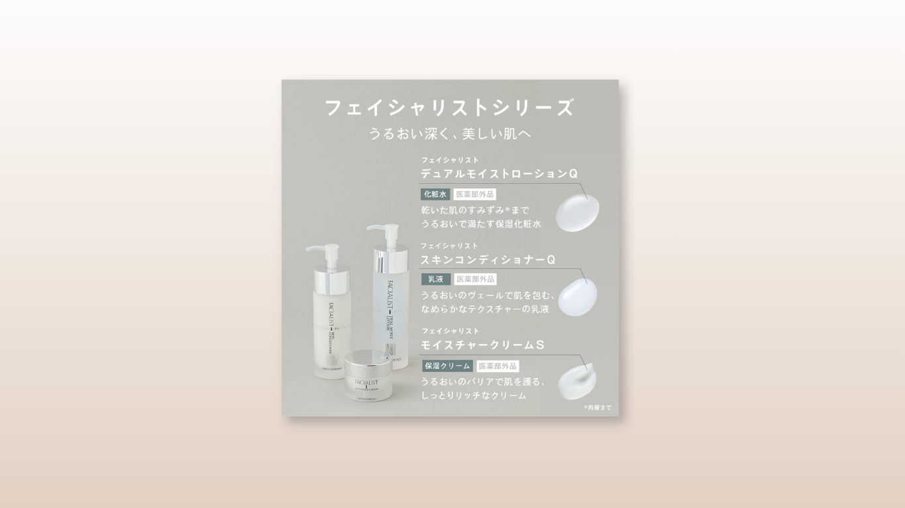

【自主制作】CBON様 SNS投稿バナー
Overview
キャリアスクールSHElikesでのコンペにて、化粧品メーカー様のInstagramに投稿するクリエイティブを作成しました。約150件程度の応募の中から、上位3選に入選しました。
- 使用ツール：
- photoshop
- 制作時間：
- 5時間
- 企画内容：
- Instagram投稿用バナー
- 支給素材：
- 素材写真画像、指定テキスト、フォント、背景（白の透過正方形オブジェクト）の使用
- 制作で工夫した点：
-
類似バナー／競合の研究
制作したいイメージに近い雰囲気のバナーを選定し、同系統のバナーでよく使われているデザインの特徴について分析しました。
- 商品素材で使用されている色をメインカラーに採用しており、メインカラー・白系・黒系の3色で構成されている。
- あしらいに関しても凝ったあしらいは使われておらず、極力シンプルな構成になっている。
- 色使いやあしらいがシンプルな分、デザインの基本「近接・反復・整列」が重視されている。
情報設計
指定トンマナがシンプルな分、デザインの基本である「まとめる（近接）」「揃える（整列）」「繰り返す（反復）」に忠実に制作することを意識しています。
レイアウト
- 商品シリーズ名を軸に、ボディコピー、個別商品名、説明の順で階層を整理。
- カーニングを細かく調整し、全体のバランス感を意識。
- 3商品の情報をグルーピングし、統一感と見やすさを両立しました。
フォント・文字サイズ
- 指定フォントVDL V7ゴシックを使用。可読性を重視し、細かな文字間調整を行いました。
- 商品シリーズ名を最も大きく、次にボディコピー、個別商品名と階層をつけ、視覚的な優先順位を確立しました。
配色
- 公式SNSのトンマナを踏襲し、彩度低めで落ち着いた配色を使用。
- 既存投稿と違和感なくなじむ色使いを意識し、違いが分かりづらい商品カテゴリにはアクセントカラーを加え、一目で認識できるよう配慮しました。